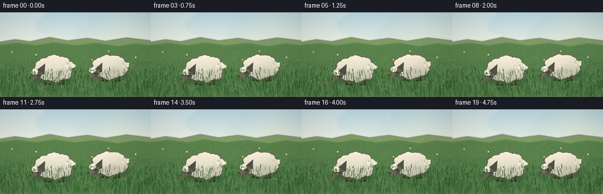
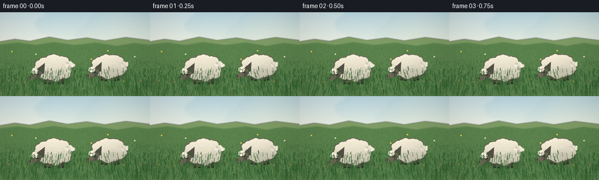
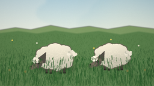
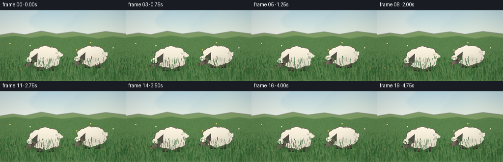

CODING AGENTS AS PIXEL WORLD MODELS
traex/DeepSeek-V4.1-Flash · instance_preservation_0017
点击播放 · 原生 RGB 像素
逐轮保存的候选
回放视频、检查图与代码变化。
每份候选均可单独播放。实际图片检查记录在下方工具轨迹中。
候选 01播放与检查图
点击播放 · 原生 RGB 像素

展开代码变化
--- 上一保存版本
+++ 本次保存版本
@@ -0,0 +1,525 @@
+from __future__ import annotations
+
+import math
+from pathlib import Path
+
+import numpy as np
+from PIL import Image, ImageDraw, ImageFilter
+
+import artifact_io
+
+
+WIDTH = 256
+HEIGHT = 144
+FRAMES = 20
+FPS = 4.0
+SS = 4 # Supersampling factor for clean small-screen details.
+W = WIDTH * SS
+H = HEIGHT * SS
+
+
+def lerp(a, b, t):
+ return tuple(int(round(a[i] + (b[i] - a[i]) * t)) for i in range(3))
+
+
+def vertical_gradient(top, bottom, height, width):
+ rows = np.linspace(0.0, 1.0, height, dtype=np.float32)[:, None]
+ top_arr = np.asarray(top, dtype=np.float32)
+ bottom_arr = np.asarray(bottom, dtype=np.float32)
+ image = top_arr[None, None, :] * (1.0 - rows[:, :, None]) + bottom_arr[None, None, :] * rows[:, :, None]
+ return np.repeat(image.astype(np.uint8), width, axis=1)
+
+
+def soft_noise(width, height, seed, scale=12.0):
+ rng = np.random.default_rng(seed)
+ small_w = max(2, int(width / scale))
+ small_h = max(2, int(height / scale))
+ noise = rng.normal(0.0, 1.0, (small_h, small_w)).astype(np.float32)
+ image = Image.fromarray(np.uint8(np.clip(noise * 35.0 + 128.0, 0, 255)), "L")
+ image = image.resize((width, height), Image.Resampling.BICUBIC)
+ return (np.asarray(image, dtype=np.float32) - 128.0) / 35.0
+
+
+def paste_rgba(base, overlay, box=None):
+ if box is None:
+ base.alpha_composite(overlay)
+ else:
+ layer = Image.new("RGBA", base.size, (0, 0, 0, 0))
+ layer.paste(overlay, box)
+ base.alpha_composite(layer)
+
+
+def draw_cloud(draw, cx, cy, scale, alpha=190):
+ circles = [
+ (-35, 6, 19, 12),
+ (-19, -2, 25, 18),
+ (2, -10, 30, 23),
+ (24, -1, 24, 18),
+ (41, 7, 18, 13),
+ (3, 8, 50, 18),
+ ]
+ for x, y, rx, ry in circles:
+ draw.ellipse(
+ [
+ (cx + x * scale - rx * scale),
+ (cy + y * scale - ry * scale),
+ (cx + x * scale + rx * scale),
+ (cy + y * scale + ry * scale),
+ ],
+ fill=(250, 249, 238, alpha),
+ )
+
+
+def make_background():
+ sky = vertical_gradient((117, 183, 218), (218, 233, 214), int(H * 0.43), W)
+ field = vertical_gradient((128, 156, 84), (49, 91, 54), H - int(H * 0.35), W)
+ arr = np.empty((H, W, 3), dtype=np.uint8)
+ arr[: sky.shape[0]] = sky
+ arr[int(H * 0.35) :] = field
+ # Fill the narrow seam between the two gradients with the sky's lower color.
+ seam = int(H * 0.35)
+ arr[seam : sky.shape[0], :, :] = sky[-1]
+ image = Image.fromarray(arr, "RGB").convert("RGBA")
+
+ # Sun and atmospheric glow.
+ glow = Image.new("RGBA", (W, H), (0, 0, 0, 0))
+ gd = ImageDraw.Draw(glow)
+ sun = (0.82 * W, 0.14 * H)
+ for radius, color in [
+ (72 * SS, (255, 236, 176, 16)),
+ (52 * SS, (255, 238, 181, 24)),
+ (34 * SS, (255, 241, 190, 34)),
+ (21 * SS, (255, 246, 207, 62)),
+ ]:
+ gd.ellipse(
+ [sun[0] - radius, sun[1] - radius, sun[0] + radius, sun[1] + radius],
+ fill=color,
+ )
+ glow = glow.filter(ImageFilter.GaussianBlur(20 * SS))
+ image.alpha_composite(glow)
+
+ clouds = Image.new("RGBA", (W, H), (0, 0, 0, 0))
+ cd = ImageDraw.Draw(clouds)
+ draw_cloud(cd, 0.20 * W, 0.14 * H, 2.2 * SS, 155)
+ draw_cloud(cd, 0.55 * W, 0.09 * H, 1.5 * SS, 125)
+ draw_cloud(cd, 0.88 * W, 0.21 * H, 1.8 * SS, 110)
+ clouds = clouds.filter(ImageFilter.GaussianBlur(2.1 * SS))
+ image.alpha_composite(clouds)
+
+ # Layered distant hills.
+ hills = Image.new("RGBA", (W, H), (0, 0, 0, 0))
+ hd = ImageDraw.Draw(hills)
+ far = [
+ (0, int(0.35 * H)),
+ (int(0.10 * W), int(0.32 * H)),
+ (int(0.20 * W), int(0.345 * H)),
+ (int(0.33 * W), int(0.295 * H)),
+ (int(0.45 * W), int(0.335 * H)),
+ (int(0.58 * W), int(0.305 * H)),
+ (int(0.70 * W), int(0.34 * H)),
+ (int(0.84 * W), int(0.30 * H)),
+ (W, int(0.335 * H)),
+ (W, H),
+ (0, H),
+ ]
+ hd.polygon(far, fill=(126, 157, 103, 255))
+ near = [
+ (0, int(0.385 * H)),
+ (int(0.12 * W), int(0.36 * H)),
+ (int(0.24 * W), int(0.39 * H)),
+ (int(0.36 * W), int(0.355 * H)),
+ (int(0.50 * W), int(0.39 * H)),
+ (int(0.64 * W), int(0.36 * H)),
+ (int(0.78 * W), int(0.40 * H)),
+ (int(0.90 * W), int(0.365 * H)),
+ (W, int(0.39 * H)),
+ (W, H),
+ (0, H),
+ ]
+ hd.polygon(near, fill=(91, 132, 79, 255))
+ hills = hills.filter(ImageFilter.GaussianBlur(0.8 * SS))
+ image.alpha_composite(hills)
+
+ # Fine color variation and sunlit patches in the meadow.
+ noise = soft_noise(W, H, 301, 9.0)
+ patch = soft_noise(W, H, 302, 38.0)
+ rgb = np.asarray(image.convert("RGB"), dtype=np.float32)
+ meadow_weight = np.clip((np.arange(H)[:, None] - 0.34 * H) / (0.66 * H), 0.0, 1.0)
+ rgb += (noise * 2.2 + patch * 3.5)[:, :, None] * meadow_weight[:, :, None]
+ warm = np.clip((W - np.arange(W)[None, :]) / W, 0.0, 1.0)
+ rgb[:, :, 0] += 2.5 * warm * meadow_weight
+ image = Image.fromarray(np.uint8(np.clip(rgb, 0, 255)), "RGB").convert("RGBA")
+
+ # Static grass detail: short strokes in the middle distance and field.
+ grass = Image.new("RGBA", (W, H), (0, 0, 0, 0))
+ gd = ImageDraw.Draw(grass)
+ rng = np.random.default_rng(731)
+ for _ in range(3600):
+ x = rng.uniform(0, W)
+ y = rng.uniform(0.405 * H, H)
+ depth = (y - 0.40 * H) / (0.60 * H)
+ length = rng.uniform(1.2, 4.5) * SS * (0.55 + depth)
+ lean = rng.uniform(-1.2, 1.2) * SS
+ if depth < 0.3:
+ color = (68, 111, 59, rng.integers(80, 150))
+ else:
+ color = (48, 91, 49, rng.integers(100, 190))
+ gd.line([(x, y), (x + lean, y - length)], fill=tuple(int(v) for v in color), width=max(1, int(SS * 0.7)))
+ image.alpha_composite(grass)
+
+ # A few tiny wildflowers add scale without competing with the sheep.
+ flowers = Image.new("RGBA", (W, H), (0, 0, 0, 0))
+ fd = ImageDraw.Draw(flowers)
+ for x, y, color in [
+ (0.08, 0.47, (242, 215, 93)),
+ (0.24, 0.50, (243, 240, 218)),
+ (0.72, 0.46, (245, 219, 103)),
+ (0.90, 0.53, (238, 235, 214)),
+ (0.61, 0.56, (238, 211, 87)),
+ ]:
+ px, py = int(x * W), int(y * H)
+ radius = int(1.3 * SS)
+ fd.ellipse([px - radius, py - radius, px + radius, py + radius], fill=color + (220,))
+ fd.line([(px, py + radius), (px, py + int(5 * SS))], fill=(57, 107, 55, 200), width=max(1, SS // 2))
+ image.alpha_composite(flowers)
+ return image
+
+
+def rounded_rotated_ellipse(layer, box, angle, fill):
+ x0, y0, x1, y1 = box
+ w, h = max(1, int(x1 - x0)), max(1, int(y1 - y0))
+ patch = Image.new("RGBA", (w + 8, h + 8), (0, 0, 0, 0))
+ pd = ImageDraw.Draw(patch)
+ pd.ellipse((4, 4, w + 3, h + 3), fill=fill)
+ patch = patch.rotate(angle, resample=Image.Resampling.BICUBIC, expand=True)
+ paste_rgba(layer, patch, (int((x0 + x1 - patch.width) / 2), int((y0 + y1 - patch.height) / 2)))
+
+
+def make_wool_texture(mask, center, rx, ry, seed, brightness=1.0):
+ bbox = mask.getbbox()
+ if bbox is None:
+ return Image.new("RGBA", mask.size, (0, 0, 0, 0))
+ x0, y0, x1, y1 = bbox
+ local_w, local_h = x1 - x0, y1 - y0
+ yy, xx = np.mgrid[0:local_h, 0:local_w].astype(np.float32)
+ nx = (xx + x0 - center[0]) / max(1.0, rx)
+ ny = (yy + y0 - center[1]) / max(1.0, ry)
+ rng = np.random.default_rng(seed)
+ fine = rng.normal(0.0, 4.0, (local_h, local_w)).astype(np.float32)
+ fine_img = Image.fromarray(np.uint8(np.clip(fine + 128, 0, 255)), "L").filter(ImageFilter.GaussianBlur(SS * 0.55))
+ fine = np.asarray(fine_img, dtype=np.float32) - 128.0
+ top_light = np.clip(0.55 - 0.34 * ny - 0.10 * nx, 0.0, 1.0)
+ lower_shadow = np.clip(0.36 + 0.34 * ny + 0.08 * nx, 0.0, 1.0)
+ base = np.empty((local_h, local_w, 3), dtype=np.float32)
+ cream = np.asarray((237, 234, 216), dtype=np.float32)
+ shadow = np.asarray((169, 170, 151), dtype=np.float32)
+ warm_light = np.asarray((255, 249, 223), dtype=np.float32)
+ base[:] = cream
+ base = base * (1.0 - lower_shadow[:, :, None]) + shadow * lower_shadow[:, :, None]
+ base = base * (1.0 - top_light[:, :, None] * 0.34) + warm_light * (top_light[:, :, None] * 0.34)
+ base += fine[:, :, None] * 0.9
+ base *= brightness
+ texture = Image.fromarray(np.uint8(np.clip(base, 0, 255)), "RGB").convert("RGBA")
+ local_mask = mask.crop(bbox)
+ texture.putalpha(local_mask)
+ full = Image.new("RGBA", mask.size, (0, 0, 0, 0))
+ full.paste(texture, (x0, y0))
+ return full
+
+
+def draw_wool_cluster(draw, cx, cy, radius, count, seed, colors):
+ rng = np.random.default_rng(seed)
+ for index in range(count):
+ angle = 2 * math.pi * index / count + rng.uniform(-0.18, 0.18)
+ distance = radius * rng.uniform(0.45, 0.82)
+ x = cx + math.cos(angle) * distance
+ y = cy + math.sin(angle) * distance * 0.72
+ r = radius * rng.uniform(0.26, 0.40)
+ color = colors[index % len(colors)]
+ draw.ellipse([x - r, y - r * 0.85, x + r, y + r * 0.85], fill=color)
+
+
+def render_sheep(image, cx, cy, rx, ry, facing, phase, seed, size=1.0):
+ layer = Image.new("RGBA", (W, H), (0, 0, 0, 0))
+ d = ImageDraw.Draw(layer)
+ cx *= SS
+ cy *= SS
+ rx *= SS * size
+ ry *= SS * size
+ bob = math.sin(phase + seed * 0.31) * 0.55 * SS
+ cy += bob
+ head_phase = phase * 1.7 + seed
+ head_drop = (0.9 + 0.55 * math.sin(head_phase)) * SS
+ chew = math.sin(phase * 4.0 + seed) * 0.55 * SS
+
+ # Ground shadow.
+ shadow = Image.new("RGBA", (W, H), (0, 0, 0, 0))
+ sd = ImageDraw.Draw(shadow)
+ sd.ellipse(
+ [
+ cx - rx * 1.10,
+ cy + ry * 0.72,
+ cx + rx * 1.18,
+ cy + ry * 1.20,
+ ],
+ fill=(31, 52, 36, 78),
+ )
+ shadow = shadow.filter(ImageFilter.GaussianBlur(3.5 * SS))
+ image.alpha_composite(shadow)
+
+ # Legs and hooves, with far legs slightly darker.
+ leg_specs = [
+ (-0.50, 0.05, (75, 70, 61, 255), 4.4),
+ (0.46, 0.04, (69, 65, 57, 255), 4.5),
+ (-0.28, 0.14, (94, 86, 70, 255), 3.7),
+ (0.25, 0.12, (88, 81, 67, 255), 3.8),
+ ]
+ for lx, ly, color, width in leg_specs:
+ top_x = cx + lx * rx
+ top_y = cy + ry * (0.38 + ly)
+ bottom_x = top_x + facing * (-2.0 * SS)
+ bottom_y = cy + ry * 1.30 + (0.8 * SS if ly > 0.1 else 0)
+ d.line([(top_x, top_y), (bottom_x, bottom_y)], fill=color, width=int(width * SS))
+ d.line(
+ [(bottom_x - 2.0 * SS, bottom_y), (bottom_x + 2.3 * SS, bottom_y)],
+ fill=(49, 45, 40, 255),
+ width=int(2.6 * SS),
+ )
+
+ # Fluffy body mask.
+ mask = Image.new("L", (W, H), 0)
+ md = ImageDraw.Draw(mask)
+ md.ellipse([cx - rx * 0.88, cy - ry * 0.88, cx + rx * 0.88, cy + ry * 0.88], fill=255)
+ rng = np.random.default_rng(seed + 100)
+ for index in range(24):
+ angle = 2 * math.pi * index / 24 + rng.uniform(-0.11, 0.11)
+ px = cx + math.cos(angle) * rx * rng.uniform(0.76, 0.91)
+ py = cy + math.sin(angle) * ry * rng.uniform(0.72, 0.91)
+ radius = rng.uniform(5.3, 8.0) * SS * size
+ md.ellipse([px - radius, py - radius * 0.88, px + radius, py + radius * 0.88], fill=255)
+ for _ in range(18):
+ px = cx + rng.uniform(-0.66, 0.66) * rx
+ py = cy + rng.uniform(-0.58, 0.50) * ry
+ radius = rng.uniform(5.0, 8.0) * SS * size
+ md.ellipse([px - radius, py - radius, px + radius, py + radius], fill=255)
+
+ # Thin warm outline and softly shaded wool.
+ outline_mask = mask.filter(ImageFilter.MaxFilter(2 * SS + 1))
+ outline = Image.new("RGBA", (W, H), (0, 0, 0, 0))
+ outline.paste((104, 100, 86, 255), mask=outline_mask)
+ layer.alpha_composite(outline)
+ wool = make_wool_texture(mask, (cx, cy), rx, ry, seed + 23, brightness=1.01)
+ layer.alpha_composite(wool)
+
+ # Curled fleece marks.
+ curl_layer = Image.new("RGBA", (W, H), (0, 0, 0, 0))
+ cd = ImageDraw.Draw(curl_layer)
+ for index in range(42):
+ px = cx + rng.uniform(-0.70, 0.70) * rx
+ py = cy + rng.uniform(-0.55, 0.54) * ry
+ r = rng.uniform(2.4, 4.3) * SS
+ light = py < cy + ry * 0.1
+ color = (255, 249, 225, 105) if light else (139, 143, 129, 78)
+ start = rng.uniform(20, 70)
+ cd.arc([px - r, py - r * 0.78, px + r, py + r * 0.78], start, start + rng.uniform(135, 225), fill=color, width=max(1, int(0.7 * SS)))
+ curl_layer.putalpha(Image.composite(curl_layer.getchannel("A"), Image.new("L", (W, H), 0), mask))
+ layer.alpha_composite(curl_layer)
+
+ # Tail is a small separate wool puff at the rear.
+ rear_x = cx - facing * rx * 0.92
+ rear_y = cy - ry * 0.22 + math.sin(phase * 1.5 + seed) * 1.0 * SS
+ tail = Image.new("RGBA", (W, H), (0, 0, 0, 0))
+ td = ImageDraw.Draw(tail)
+ draw_wool_cluster(
+ td,
+ rear_x,
+ rear_y,
+ 8.0 * SS * size,
+ 8,
+ seed + 301,
+ [
+ (228, 226, 208, 255),
+ (240, 237, 219, 255),
+ (201, 201, 184, 255),
+ ],
+ )
+ layer.alpha_composite(tail)
+
+ # Neck and down-turned head, facing left by default.
+ head_x = cx + facing * rx * 0.92
+ head_y = cy + ry * 0.62 + head_drop
+ neck_points = [
+ (cx + facing * rx * 0.46, cy - ry * 0.42),
+ (head_x - facing * 2.0 * SS, head_y - ry * 0.58),
+ (head_x + facing * 7.0 * SS, head_y + ry * 0.08),
+ (cx + facing * rx * 0.50, cy + ry * 0.48),
+ ]
+ d.polygon(neck_points, fill=(83, 80, 72, 255))
+
+ head_w, head_h = 17.0 * SS * size, 12.5 * SS * size
+ rounded_rotated_ellipse(
+ layer,
+ [head_x - head_w / 2, head_y - head_h / 2, head_x + head_w / 2, head_y + head_h / 2],
+ -facing * 23,
+ (88, 84, 75, 255),
+ )
+
+ # Muzzle, nostrils, and a chewing mouth.
+ muzzle_x = head_x + facing * 7.0 * SS
+ muzzle_y = head_y + 4.0 * SS + chew
+ rounded_rotated_ellipse(
+ layer,
+ [muzzle_x - 7.5 * SS, muzzle_y - 4.0 * SS, muzzle_x + 7.5 * SS, muzzle_y + 4.0 * SS],
+ -facing * 25,
+ (117, 109, 94, 255),
+ )
+ d.line(
+ [
+ (muzzle_x + facing * 6.2 * SS, muzzle_y - 0.4 * SS),
+ (muzzle_x + facing * 2.2 * SS, muzzle_y + 0.7 * SS + chew * 0.35),
+ ],
+ fill=(43, 40, 36, 255),
+ width=max(1, int(0.85 * SS)),
+ )
+ d.ellipse(
+ [muzzle_x + facing * 3.5 * SS - 0.9 * SS, muzzle_y - 2.0 * SS, muzzle_x + facing * 3.5 * SS + 0.9 * SS, muzzle_y - 0.2 * SS],
+ fill=(54, 50, 44, 255),
+ )
+
+ # Ear, eye, and fluffy forelock.
+ ear_x = head_x - facing * 3.0 * SS
+ ear_y = head_y - 6.2 * SS
+ rounded_rotated_ellipse(
+ layer,
+ [ear_x - 6.5 * SS, ear_y - 2.6 * SS, ear_x + 6.5 * SS, ear_y + 2.6 * SS],
+ facing * 27,
+ (112, 102, 87, 255),
+ )
+ blink = (phase + seed * 0.13) % (2 * math.pi * 2.0) < 0.20
+ eye_x = head_x - facing * 1.4 * SS
+ eye_y = head_y - 2.4 * SS
+ if blink:
+ d.line(
+ [(eye_x - 1.5 * SS, eye_y), (eye_x + 1.5 * SS, eye_y)],
+ fill=(34, 31, 28, 255),
+ width=max(1, SS),
+ )
+ else:
+ d.ellipse(
+ [eye_x - 1.55 * SS, eye_y - 1.55 * SS, eye_x + 1.55 * SS, eye_y + 1.55 * SS],
+ fill=(28, 26, 24, 255),
+ )
+ d.ellipse(
+ [eye_x - 0.8 * SS, eye_y - 0.9 * SS, eye_x + 0.15 * SS, eye_y + 0.05 * SS],
+ fill=(224, 218, 195, 235),
+ )
+ forelock_x = head_x + facing * 3.8 * SS
+ forelock_y = head_y - 7.1 * SS
+ draw_wool_cluster(
+ d,
+ forelock_x,
+ forelock_y,
+ 6.5 * SS * size,
+ 7,
+ seed + 512,
+ [(245, 241, 221, 255), (225, 224, 207, 255), (252, 248, 228, 255)],
+ )
+
+ # The muzzle is tucked into a small animated tuft of grass.
+ grass_x = muzzle_x + facing * 8.0 * SS
+ grass_y = cy + ry * 1.10
+ for index in range(7):
+ offset = (index - 3) * 1.15 * SS
+ sway = math.sin(phase * 2.3 + index * 0.8 + seed) * 0.75 * SS
+ tip_y = grass_y - (5.5 + (index % 3) * 1.4) * SS
+ d.line(
+ [(grass_x + offset, grass_y), (grass_x + offset + sway, tip_y)],
+ fill=(58, 109, 52, 255),
+ width=max(1, int(0.65 * SS)),
+ )
+
+ image.alpha_composite(layer)
+
+
+def add_foreground_grass(image, phase):
+ fg = Image.new("RGBA", (W, H), (0, 0, 0, 0))
+ d = ImageDraw.Draw(fg)
+ rng = np.random.default_rng(1811)
+ # Tall foreground blades frame the meadow and lightly occlude the hooves.
+ for _ in range(560):
+ x = rng.uniform(0, W)
+ y = rng.uniform(0.68 * H, H + 4 * SS)
+ depth = (y - 0.68 * H) / (0.32 * H)
+ length = rng.uniform(4.0, 13.0) * SS * (0.50 + depth)
+ sway = math.sin(phase * 1.15 + x * 0.005 + rng.uniform(-0.5, 0.5)) * (0.9 + depth * 1.6) * SS
+ shade = int(rng.integers(0, 25))
+ color = (35 + shade // 2, 80 + shade, 39 + shade // 3, int(rng.integers(155, 235)))
+ width = max(1, int(rng.uniform(0.6, 1.25) * SS))
+ d.line([(x, y), (x + sway, y - length)], fill=color, width=width)
+ # A few seed heads give the nearest grass readable scale.
+ for x, y, length in [
+ (0.06, 0.99, 0.17),
+ (0.16, 0.96, 0.12),
+ (0.83, 0.97, 0.14),
+ (0.94, 1.00, 0.18),
+ ]:
+ px, py = x * W, y * H
+ sway = math.sin(phase * 1.1 + x * 7.0) * 1.2 * SS
+ d.line([(px, py), (px + sway, py - length * H)], fill=(50, 95, 43, 230), width=max(1, SS))
+ d.ellipse(
+ [px + sway - 1.8 * SS, py - length * H - 3.0 * SS, px + sway + 1.8 * SS, py - length * H + 1.0 * SS],
+ fill=(119, 126, 68, 235),
+ )
+ image.alpha_composite(fg)
+
+
+def add_atmosphere(image, frame_index):
+ # Gentle color grade, vignette, and frame-to-frame grain.
+ arr = np.asarray(image.convert("RGB"), dtype=np.float32)
+ yy, xx = np.mgrid[0:H, 0:W].astype(np.float32)
+ nx = (xx / W - 0.5) * 2.0
+ ny = (yy / H - 0.5) * 2.0
+ vignette = np.clip(1.0 - 0.13 * (nx * nx * 0.55 + ny * ny * 0.35), 0.78, 1.0)
+ arr *= vignette[:, :, None]
+ arr[:, :, 0] *= 1.018
+ arr[:, :, 2] *= 0.992
+ rng = np.random.default_rng(9000 + frame_index)
+ grain = rng.normal(0.0, 1.05, (H // 2, W // 2)).astype(np.float32)
+ grain_img = Image.fromarray(np.uint8(np.clip(grain * 28 + 128, 0, 255)), "L")
+ grain_img = grain_img.resize((W, H), Image.Resampling.BILINEAR)
+ grain = (np.asarray(grain_img, dtype=np.float32) - 128.0) / 28.0
+ arr += grain[:, :, None]
+ return Image.fromarray(np.uint8(np.clip(arr, 0, 255)), "RGB")
+
+
+def render_frame(background, frame_index):
+ t = frame_index / FPS
+ phase = 2 * math.pi * frame_index / FRAMES
+ image = background.copy()
+ render_sheep(image, 91.0, 96.0, 31.0, 20.0, facing=-1, phase=phase, seed=17, size=1.0)
+ render_sheep(image, 187.0, 92.5, 29.5, 18.5, facing=-1, phase=phase + 1.8, seed=42, size=0.96)
+ add_foreground_grass(image, phase)
+ image = add_atmosphere(image, frame_index)
+ return np.asarray(image.resize((WIDTH, HEIGHT), Image.Resampling.LANCZOS), dtype=np.uint8)
+
+
+def main():
+ case_dir = Path(__file__).resolve().parent
+ background = make_background()
+ frames = [render_frame(background, index) for index in range(FRAMES)]
+ artifact_io.save(frames, case_dir)
+
+ # A compact GIF is useful for quick human inspection; the benchmark uses pixels.npz.
+ pil_frames = [Image.fromarray(frame) for frame in frames]
+ pil_frames[0].save(
+ case_dir / "preview.gif",
+ save_all=True,
+ append_images=pil_frames[1:],
+ duration=int(1000 / FPS),
+ loop=0,
+ optimize=False,
+ )
+
+
+if __name__ == "__main__":
+ main()
候选 02播放与检查图
点击播放 · 原生 RGB 像素


展开代码变化
--- 上一保存版本
+++ 本次保存版本
@@ -211,12 +211,12 @@
top_light = np.clip(0.55 - 0.34 * ny - 0.10 * nx, 0.0, 1.0)
lower_shadow = np.clip(0.36 + 0.34 * ny + 0.08 * nx, 0.0, 1.0)
base = np.empty((local_h, local_w, 3), dtype=np.float32)
- cream = np.asarray((237, 234, 216), dtype=np.float32)
- shadow = np.asarray((169, 170, 151), dtype=np.float32)
- warm_light = np.asarray((255, 249, 223), dtype=np.float32)
+ cream = np.asarray((246, 243, 226), dtype=np.float32)
+ shadow = np.asarray((193, 192, 173), dtype=np.float32)
+ warm_light = np.asarray((255, 250, 230), dtype=np.float32)
base[:] = cream
- base = base * (1.0 - lower_shadow[:, :, None]) + shadow * lower_shadow[:, :, None]
- base = base * (1.0 - top_light[:, :, None] * 0.34) + warm_light * (top_light[:, :, None] * 0.34)
+ base = base * (1.0 - lower_shadow[:, :, None] * 0.78) + shadow * (lower_shadow[:, :, None] * 0.78)
+ base = base * (1.0 - top_light[:, :, None] * 0.28) + warm_light * (top_light[:, :, None] * 0.28)
base += fine[:, :, None] * 0.9
base *= brightness
texture = Image.fromarray(np.uint8(np.clip(base, 0, 255)), "RGB").convert("RGBA")
@@ -249,7 +249,8 @@
bob = math.sin(phase + seed * 0.31) * 0.55 * SS
cy += bob
head_phase = phase * 1.7 + seed
- head_drop = (0.9 + 0.55 * math.sin(head_phase)) * SS
+ head_drop = (1.0 + 0.62 * math.sin(head_phase)) * SS
+ head_shift = math.sin(phase * 1.15 + seed * 0.4) * 0.85 * SS
chew = math.sin(phase * 4.0 + seed) * 0.55 * SS
# Ground shadow.
@@ -346,7 +347,7 @@
layer.alpha_composite(tail)
# Neck and down-turned head, facing left by default.
- head_x = cx + facing * rx * 0.92
+ head_x = cx + facing * (rx * 0.92 + head_shift)
head_y = cy + ry * 0.62 + head_drop
neck_points = [
(cx + facing * rx * 0.46, cy - ry * 0.42),
@@ -426,7 +427,7 @@
)
# The muzzle is tucked into a small animated tuft of grass.
- grass_x = muzzle_x + facing * 8.0 * SS
+ grass_x = muzzle_x + facing * 8.0 * SS - facing * head_shift * 0.35
grass_y = cy + ry * 1.10
for index in range(7):
offset = (index - 3) * 1.15 * SS
候选 03播放与检查图

可观测工具轨迹
实际执行的命令与返回图片。
命令 1exit 0
/bin/bash -c "pwd && rg --files -g 'prompt.txt' -g 'GENERATION_RULES.md' -g 'task_spec.json' -g '"'!**/.git/**'"'"
命令 2exit 0
/bin/bash -c 'cat prompt.txt'
命令 3exit 0
/bin/bash -c 'cat GENERATION_RULES.md'
命令 4exit 0
/bin/bash -c 'cat task_spec.json'
命令 5exit 0
/bin/bash -c "find . -maxdepth 2 -type f -not -path './.git/*' -printf '%p\\n' | sort | head -200"
命令 6exit 0
/bin/bash -c "sed -n '1,240p' artifact_io.py"
命令 7exit 0
/bin/bash -c "python - <<'PY'
import PIL, numpy
print('PIL', PIL.__version__)
print('numpy', numpy.__version__)
PY"命令 8exit 0
/bin/bash -c 'command -v ffmpeg || true; command -v ffprobe || true'
命令 9exit 1
/bin/bash -c 'python generate.py'
命令 10exit 0
/bin/bash -c 'python generate.py'
命令 11exit 0
/bin/bash -c "python - <<'PY'
from pathlib import Path
import numpy as np
from PIL import Image
p=Path('.')
files=sorted((p/'frames').glob('*.png'))
print('frame_count',len(files))
for f in (files[0], files[-1]):
im=Image.open(f)
print(f.name, im.size, im.mode)
z=np.load(p/'pixels.npz')['pixels']
print('pixels', z.shape, z.dtype, 'range', int(z.min()), int(z.max()))
a=np.asarray(Image.open(files[0]))
b=np.asarray(Image.open(files[1]))
print('changed_pixels_frame0_1', int(np.any(a"'!=b,axis=2).sum()))
print('"'artifacts', sorted(x.name for x in p.iterdir() if x.is_file()))
PY"命令 12exit 0
/bin/bash -c 'python generate.py'
命令 13exit 0
/bin/bash -c "python - <<'PY'
from pathlib import Path
import numpy as np
from PIL import Image
import json
root = Path('.')
spec = json.loads((root / 'task_spec.json').read_text())
frames = sorted((root / 'frames').glob('*.png'))
assert len(frames) == spec['frames'] == 20
arrays = []
for path, index in zip(frames, range(20)):
im = Image.open(path)
assert im.size == (spec['width'], spec['height'])
assert im.mode == 'RGB'
arrays.append(np.asarray(im))
pixels = np.load(root / 'pixels.npz')['pixels']
assert pixels.shape == (spec['height'], spec['width'], spec['frames'])
assert pixels.dtype == np.uint32
# Reconstruct packed RGB and compare every frame to the PNGs.
reconstructed = np.stack([
((pixels >> 16) & 255).astype(np.uint8),
((pixels >> 8) & 255).astype(np.uint8),
(pixels & 255).astype(np.uint8),
], axis=2).transpose(2, 0, 1, 3)
assert np.array_equal(reconstructed, np.stack(arrays))
diffs = [float(np.abs(arrays[i].astype(np.int16) - arrays[i-1].astype(np.int16)).mean()) for i in range(1, 20)]
assert min(diffs) > 0.05 and max(diffs) < 5.0
assert (root / 'index.html').stat().st_size > 10000
print('validated: 20 RGB frames, 256x144, packed pixels match PNGs')
print('motion mean-abs-diff range:', round(min(diffs), 3), 'to', round(max(diffs), 3))
print('pixels.npz:', (root / 'pixels.npz').stat().st_size, 'bytes')
print('index.html:', (root / 'index.html').stat().st_size, 'bytes')
PY
python -m py_compile generate.py"命令 14exit 1
/bin/bash -c "python - <<'PY'
from pathlib import Path
import numpy as np
from PIL import Image
root=Path('.')
arrays=[np.asarray(Image.open(p)) for p in sorted((root/'frames').glob('*.png'))]
pixels=np.load(root/'pixels.npz')['pixels']
reconstructed=np.stack([((pixels>>16)&255).astype(np.uint8),((pixels>>8)&255).astype(np.uint8),(pixels&255).astype(np.uint8)],axis=2).transpose(2,0,1,3)
target=np.stack(arrays)
print('shapes', pixels.shape, reconstructed.shape, target.shape)
print('equal', np.array_equal(reconstructed,target))
if not np.array_equal(reconstructed,target):
mismatch=np.argwhere(np.any(reconstructed"'!=target,axis=3))
print('"'mismatch_count',len(mismatch),'first',mismatch[:5])
f,y,x=mismatch[0]
print('first_values',reconstructed[f,y,x],target[f,y,x],int(pixels[y,x,f]))
diffs=[float(np.abs(arrays[i].astype(np.int16)-arrays[i-1].astype(np.int16)).mean()) for i in range(1,20)]
print('diffs',min(diffs),max(diffs),diffs)
PY"命令 15exit 0
/bin/bash -c "python - <<'PY'
from pathlib import Path
import numpy as np
from PIL import Image
import json
root = Path('.')
spec = json.loads((root / 'task_spec.json').read_text())
frames = sorted((root / 'frames').glob('*.png'))
assert len(frames) == spec['frames'] == 20
arrays = []
for path in frames:
im = Image.open(path)
assert im.size == (spec['width'], spec['height'])
assert im.mode == 'RGB'
arrays.append(np.asarray(im))
pixels = np.load(root / 'pixels.npz')['pixels']
assert pixels.shape == (spec['height'], spec['width'], spec['frames'])
assert pixels.dtype == np.uint32
reconstructed = np.stack([
((pixels >> 16) & 255).astype(np.uint8),
((pixels >> 8) & 255).astype(np.uint8),
(pixels & 255).astype(np.uint8),
], axis=2).transpose(3, 0, 1, 2)
assert np.array_equal(reconstructed, np.stack(arrays))
diffs = [float(np.abs(arrays[i].astype(np.int16) - arrays[i-1].astype(np.int16)).mean()) for i in range(1, 20)]
assert min(diffs) > 0.05 and max(diffs) < 5.0
assert (root / 'index.html').stat().st_size > 10000
print('validated: 20 RGB frames, 256x144, packed pixels match PNGs')
print('motion mean-abs-diff range:', round(min(diffs), 3), 'to', round(max(diffs), 3))
print('pixels.npz:', (root / 'pixels.npz').stat().st_size, 'bytes')
print('index.html:', (root / 'index.html').stat().st_size, 'bytes')
PY
python -m py_compile generate.py"命令 16exit 0
/bin/bash -c 'git status --short 2>/dev/null || true; ls -lh frames/00.png frames/19.png inspection.png pixels.npz index.html generate.py'
视觉工具实际返回图片 1

视觉工具实际返回图片 2

视觉工具实际返回图片 3

视觉工具实际返回图片 4

保存候选 3 份；完成命令 16 次；可验证图片返回 4 张。原始 API 响应与完整日志保留在本地。